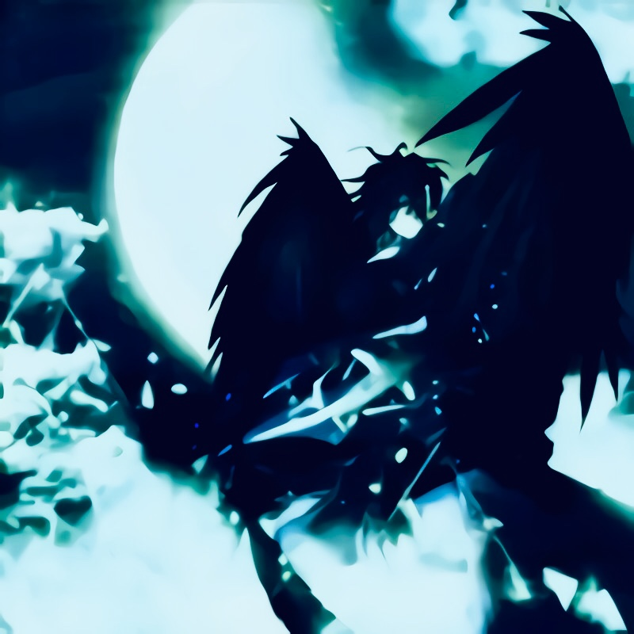

记得高中时，我因递交了入党申请书，并被党组织批准成为一
名入党积极分子而兴奋欢喜过。还有一年前，被党组织接受成
为预备党员，面对党旗宣誓，许下承诺的庄严与骄傲。转眼之
间，我已经在党组织的教育与培养中生活了一年。今天，是考
察期结束的日子，因此，我正式向党组织提出申请，希望党组
织对我进行严格的考察，审核我是否具备了一名合格党员应有
素质。因此，我正式向党组织提出申请，希望党组织对我进行
严格的考察，审核我是否具备了一名合格党员应有素质。还有
一年前，被党组织接受成为预备党员，面对党旗宣誓，许下承
诺的庄严与骄傲。转眼之间，我已经在党组织的教育与培养中
生活了一年。
one
two